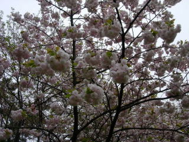
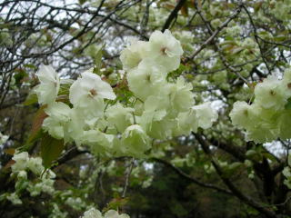
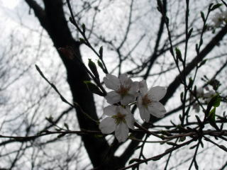
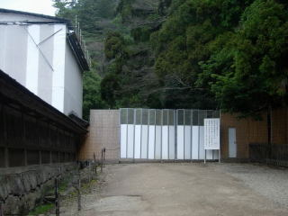
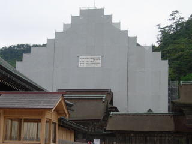

出雲大社の八重桜が満開
2010/4/18
ソメイヨシノはもう終わりましたが、八重桜が満開でした。
ちょっと写真が暗かったです。

そんなに本数は沢山ないですが、八重は派手なので目立ってました。
こっちは御衣黄でしょうか？

綺麗ですね。これちょっと欲しいなって思いました。育てれるといいんですが、どうなんでしょうね。
次はボタンと藤が咲くのが楽しみです。
島根県出雲市大社町杵築東195
2010/4/18
ソメイヨシノはもう終わりましたが、八重桜が満開でした。
ちょっと写真が暗かったです。

そんなに本数は沢山ないですが、八重は派手なので目立ってました。
こっちは御衣黄でしょうか？

綺麗ですね。これちょっと欲しいなって思いました。育てれるといいんですが、どうなんでしょうね。
次はボタンと藤が咲くのが楽しみです。
2010/3/22
出雲大社の境内は風があまりあたらなく、わりと温かいので桜がもしかして咲いてるかも？って思ったんですが、ちょっとしか花が咲いていませんでした。

でももうちょっとで沢山咲きそうです。
次の週末の天気が気になりますね。
2010/1/3
今日は天気が悪く雪や雨が降っていたので、お正月ですがわりと空いていました。
本殿の横は通行止めになっていました。

行動範囲が狭くなっているので、お参りする場所が減り寂しいですね。
しょうがないので、ささっとお参りして帰りました。
寒いせいか、屋台やお土産屋さんで買い物している人も少なかった気がしました。
2009/7/26
大社の神門通り交通広場（新しく出来た駐車場）で、軽4朝市がありました。
軽自動車のバンが20台くらい来てて、色んな商品をそれぞれで販売していました。
朝市っていうと新鮮な野菜や鮮魚を販売しているイメージがしますが、ここの朝市では、雑貨、カキ氷、ジュース、ケーキ、パン、サバ寿司、魚、フリーマーケットっぽいものなんかがありました。ちょっとしたイベントの出店みたいせすね。
観光客相手のお土産を販売している朝市じゃなくて、地元の人の買い物用朝市な感じがしました。
近くのJAでも朝市をしているので、色々と買い物が出来て便利です。
今日はイワシのメザシと、クレールのマカロンを買って帰りました。次は何時あるか知りませんが、また行きたいと思いました。
2009/5/31
日曜ですけど、本殿改装中のせいか、ゴールデンウィークの後のせいか、インフルエンザの流行のせいかもしれませんが、人が少なかったです。

のんびりと鳩と鯉にエサをやって遊べて良かったです。
遷宮工事って、普段と違ってなんか新鮮。